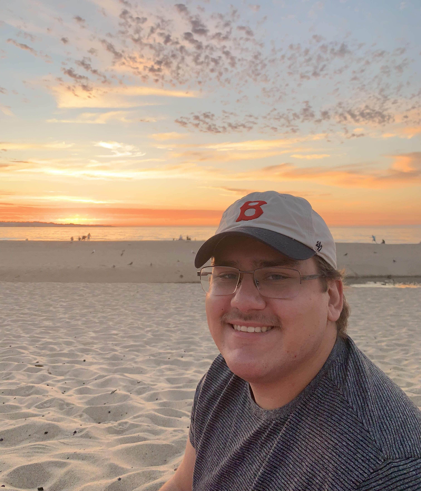

<topbar style="display:none;">
<item><a href="./index.html">Home</a></item>
<item><a href="./about.html">About</a></item>
</topbar>
# About Me
I'm Jaron Cota, a third-year student at MIT studying Nuclear Engineering (Course 22) and Physics (Course 8).
I'm interested in sustainability, nuclear fusion technology, and helping reverse the climate catastrophe.
I have some experience researching at MIT with the UROP program, and am currently working on a publication.
Other non-academic interests of mine are playing video games, reading, running, biking, and music.
<!--  how to put image in in Markdown, resizing is a pain though.-->
 <!--how to put image in with html-->